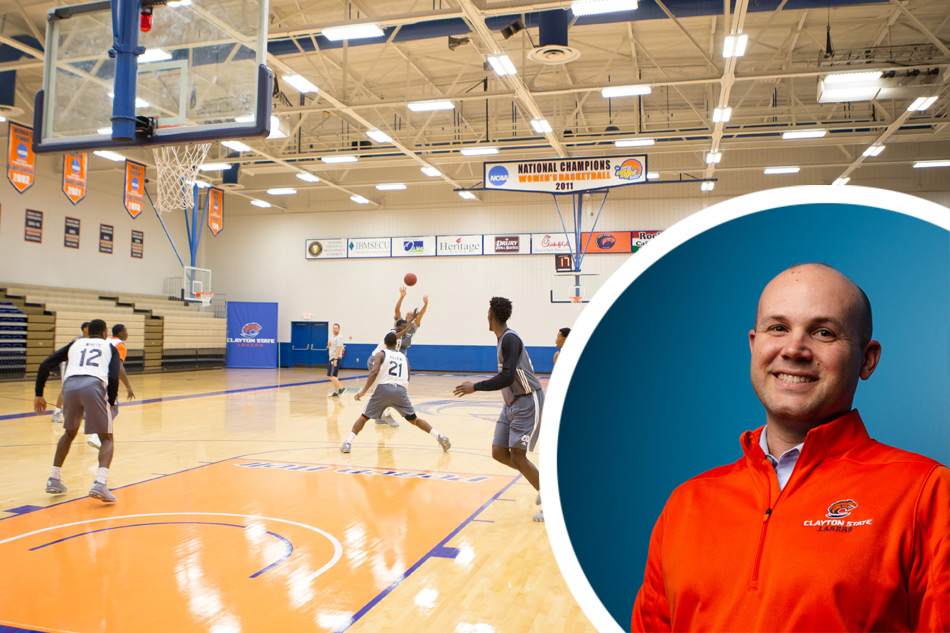

More stories
Homegrown Georgia
Spring 2019 |
By Kelly Petty
What do you do with a box of old tapes from the 1990s that highlight daily life and culture in Georgia?
Share the Story on Facebook Share the Story on Twitter Share the Story via Email Share the Story on LinkedIn
Spring 2019 | By Joshua Darling
On August 29, 2018, Clayton State Athletics named Ryan Erlacher as the fourth full-time Director of Athletics in the program’s 29-year history.
Now more than three months into his time as the face of the Lakers, www.ClaytonStateSports.com sits down with him to get his take on what he has experienced so far, learn a bit more about him and his family, and discuss where he sees Laker Athletics going in the near future.
ClaytonStateSports.com (CSS): What drew you to Clayton State Athletics?
Ryan Erlacher (RE): A combination of things attracted me to Clayton State University. First and foremost, everything the University had to offer was extremely appealing to me. On my interview, I was absolutely amazed by the pure beauty of the campus. I could see why so many members of Laker Nation take such pride in their University. I was also impressed with President [Dr. Tim] Hynes and all he was doing for the University. Fast forward a few months, now I know I couldn’t have asked for a better boss.
My wife Kellie and I have two children, our son Austin is five, and our daughter Isabelle is three-and-a-half. When considering making the move to Atlanta, we thought there were so many benefits to living in a big city. We have had a blast getting out on weekends and exploring all that Atlanta has to offer a young family.
Last, but certainly not least, the opportunity to run a major DII athletics program was always a career goal of mine. The ability to remain in the PBC was also a big draw for me.
I am incredibly grateful for the confidence Dr. Hynes and his staff have shown in me by making this appointment.
So, all in all, the opportunity at Clayton State for my family and I was something we were very excited about, and we are thrilled to be a part of Laker Nation!
CSS: What are the most important things Laker fans should know about Ryan Erlacher?
RE: I am a servant leader who believes in putting the needs of our student-athletes, athletics department, and University first.
Those who have worked with me in the past would tell you I truly care. I care about the well-being of everyone in our department, their development, and presenting them with opportunities to be successful. I am also someone who believes in transparency, being intentional when others are unintentional, building a championship culture and working smart. I look for ways to be creative, different and like to think outside the box to give our department the best opportunity to be great.
I have worked with some incredible people throughout my career who have helped shape who I am. But no one has had more of an impact on my life than my family. From my mother, Janet, and father, Tim, to my wife and children, I am truly blessed to have such a wonderful and supportive family who understands the demands of a career in college athletics. Working in college athletics is a lifestyle, not just a career, and my family loves living this lifestyle.
On a side note, some fun facts most people don’t know about me are I have a mild sweet tea addiction, I am a BIG Darius Rucker fan, huge BBQ lover and enjoy golfing and fishing when I can find the time.
RE: My goals for the athletics program are the same now as they were on day one. In everything we do, we want to put the needs of our student-athletes first and ensure they are having a great experience. In addition, our priorities are achieving academic success, engaging the community, fielding nationally competitive teams, and developing our external giving plan to supplement our existing budgets.
Having been in the position for several months now, other priorities have presented themselves. In addition to the items above, we are also prioritizing our branding and messaging efforts, facility enhancements and determining how our department can become more efficient and effective. We have also begun the conversation of how our department can intentionally build and improve our culture and how we can distinguish ourselves from other programs across the country. Our drive as a department is to think differently and reach our potential.
CSS: What are the greatest challenges facing the Department and how do you plan to overcome them to drive Clayton State Athletics forward?
RE: Like most small college athletics programs, our major challenges are lack of staffing and resources. There are several key positions we are lacking, along with some vital support positions that would help our department continue to excel. Additionally, our operating budget is not funded at a level to position us to be one of the best NCAA DII programs in the country. But the good news is we see these challenges as opportunities, opportunities we want to make significant strides toward.
For starters, we are implementing an ambitious development plan, focused on casting the biggest net we can in terms of a comprehensive fundraising program. Casting a big net will allow us to leverage all of the University’s available resources and should prevent us from leaving available opportunities on the table. Bottom line, we need to supplement our budget with external funding.
At the end of the day, we need to make sure our product is a great one and that is where branding and messaging can play a vital role in our success. We want everyone associated with our program to take tremendous pride in Laker Athletics, feel that they play a role in our success, and are excited to be a member of OUR TEAM!
CSS: What are your expectations for the Department and how should fans start to see things change in the near future?
RE: I certainly have some high expectations and goals for our department, along with ways we can hold ourselves accountable to accomplish those goals; however, the mission and goals of our department aren’t solely mine, they need to be those of our department.
As a team, we need to be 100-percent invested in our department and work together to achieve our goals. As a department, we will determine what our mission, core values and culture will be, along with how we want to go about conducting business, who we are and where we want our program to go.
The most noticeable difference [fans will see] will be the way Clayton State Athletics represents the institution. We want to set a standard of excellence in all that we do and offer programs that represent the University with class and distinction, on and off the field. To quote an old friend, Clayton State Athletics is working to be different, noticeable and appealing. We know if we work smart, create a culture of excellence and trust one another, we can be one of the top athletics programs in NCAA Division II. Clayton State Athletics has a bold vision and bright future.
Back to the Spring 2019 issue
Spring 2019 |
By Kelly Petty
What do you do with a box of old tapes from the 1990s that highlight daily life and culture in Georgia?
Spring 2019 |
By Kelly Petty
Health and Fitness Management students team up with Riverdale fire department
Spring 2019 |
By Jessica Merriman
Beaming with a bright smile and a welcome greeting